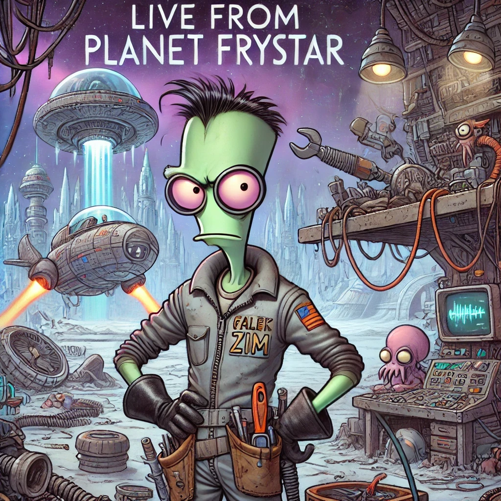
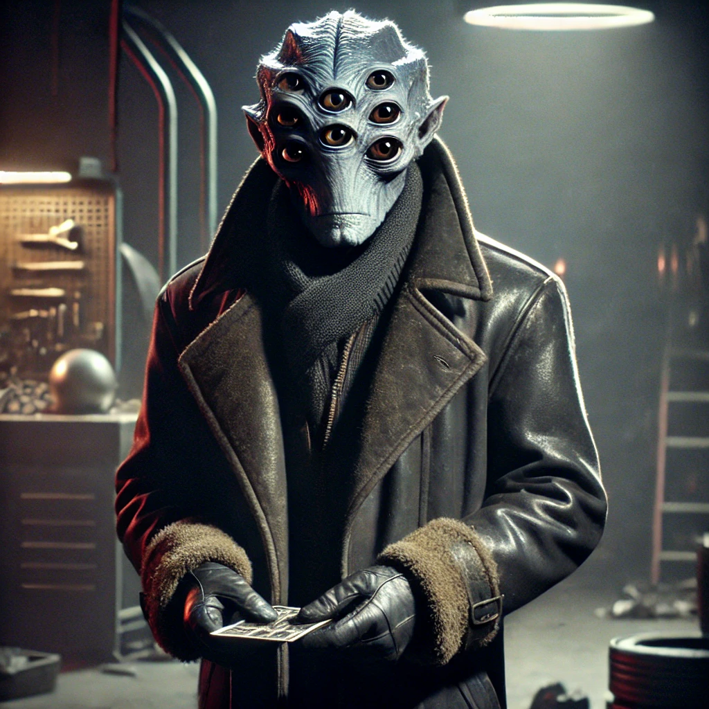

Live from Planet Frystar

Chapter 1
Another Day, Another Malfunction
Galek Zim sat on an overturned fuel canister, staring at the absolute wreck of a spaceship in front of him. It was supposed to be a simple repair job-a routine engine check. Instead, the moment he touched the panel, the whole thing coughed out a cloud of black smoke and made a noise that could only be described as "a dying space-goose."
Galek groaned. "I can hear you, asshole. And no, I'm not gonna start an existential crisis at 8 AM."
"Shut up."
The ship's owner, a jittery eight-eyed alien named Brivnor, watched nervously from the side. "Soooo… can you fix it?"

Galek wiped his hands on his jumpsuit, which somehow made them even dirtier. "That depends. How exactly did this happen?"
Brivnor shuffled awkwardly. "Uhh… funny story. I might have flown too close to a plasma storm."
Galek blinked. "Might have?"
Brivnor coughed. "Okay, okay. I flew straight into a plasma storm."
Galek sighed and grabbed a wrench. "Alright. Let's see what fresh disaster awaits under this panel."
As soon as he pried open the ship's main circuit box, a tiny, charred alien creature scuttled out, coughed up a puff of smoke, and gave Galek a look that screamed 'I hate my life.'
Galek and Brivnor both stared.
Brivnor pointed. "Uhhh… what is that?"
Galek slowly turned to Brivnor. "Buddy. When was the last time you cleaned your ship?"
Brivnor shrugged. "I dunno… six years?"
Galek tossed his wrench over his shoulder. "I quit."